A walkthrough of every screen — real screenshots, nothing staged.
WordPress health, performance and developer diagnostics. One read-only scan, then a report you can act on.
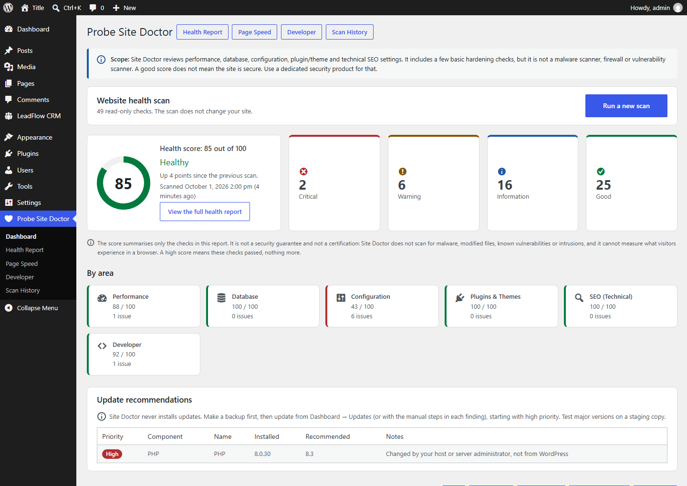
49 checks across performance, database, configuration, plugins & themes, technical SEO and developer diagnostics — with the honest note that the score is not a security guarantee.
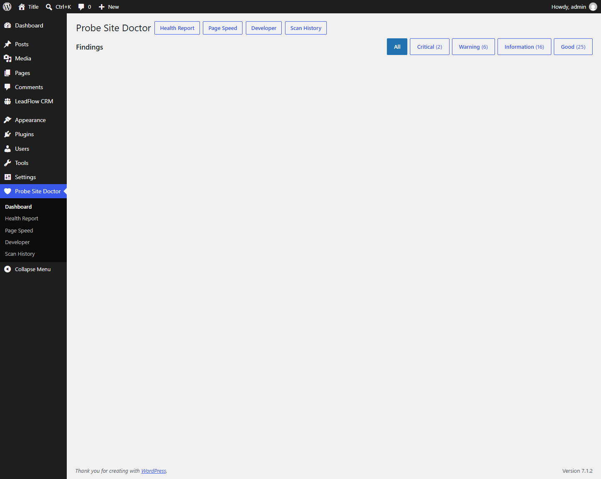
Severity, explanation, estimated impact, recommended action, and manual steps with copyable commands. Site Doctor never runs them for you.
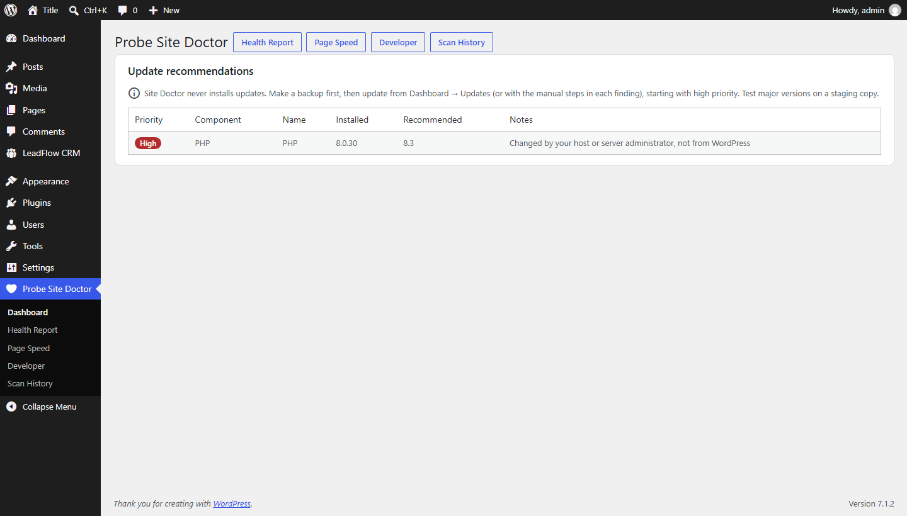
Prioritised from the update data WordPress already has. No request to WordPress.org, no automatic installs.
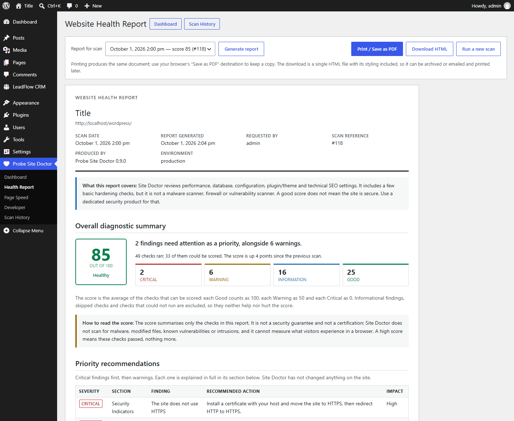
Overall summary, priority recommendations, per-section assessments. Print to PDF, or download one self-contained HTML file.
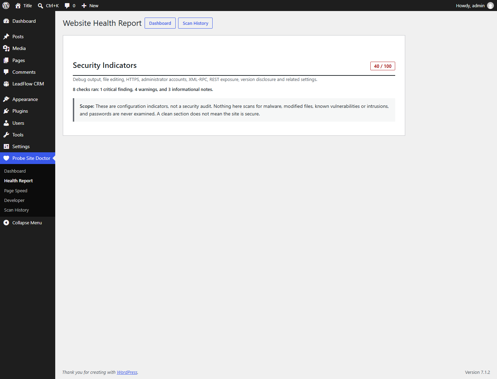
Security Indicators says it is not a security audit. SEO says it does not replace an SEO platform. Performance says it is not a browser measurement.
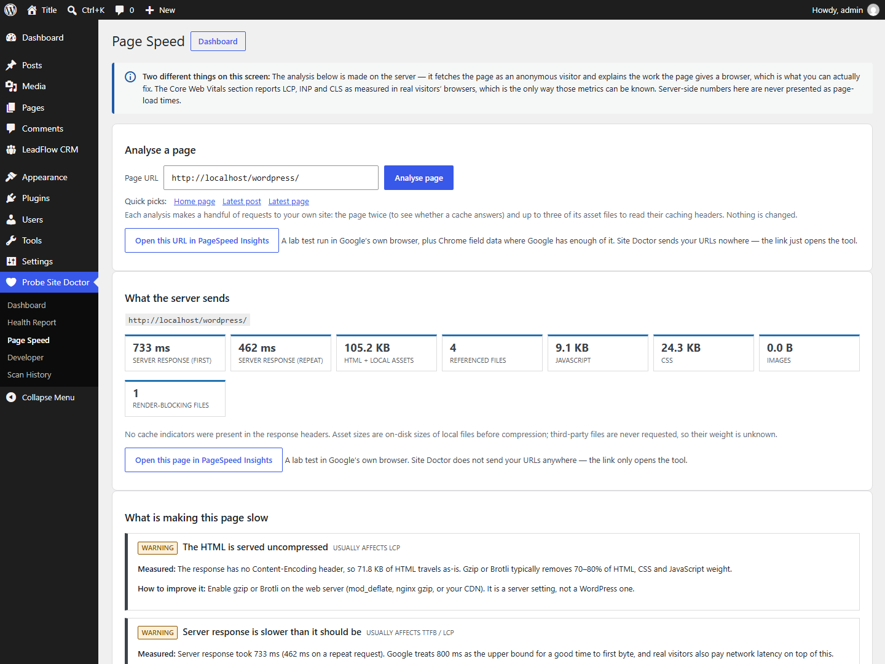
Fetched twice as an anonymous visitor to see whether a cache answers, with asset weight, render-blocking files and caching headers.
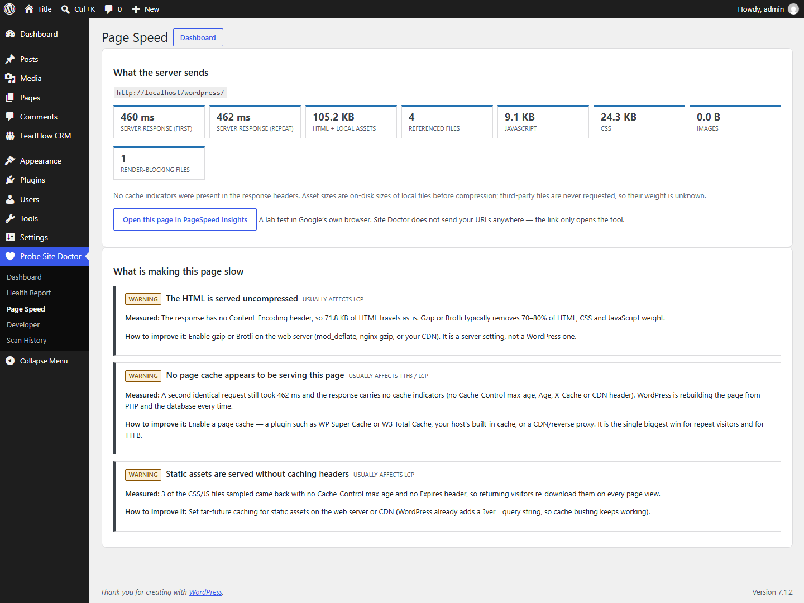
Each cause names what was measured, the Core Web Vital it usually affects, and the concrete change that improves it.
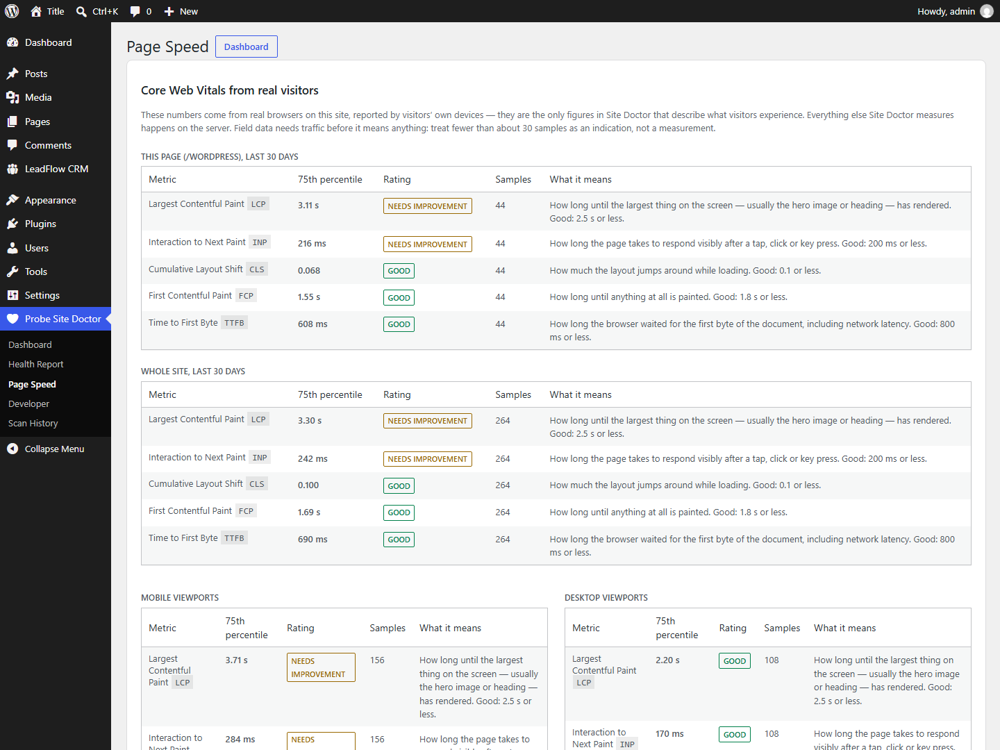
Optional, off by default, first-party only. LCP, INP and CLS as 75th percentiles per page and device — no IP address, no user agent, no cookie.
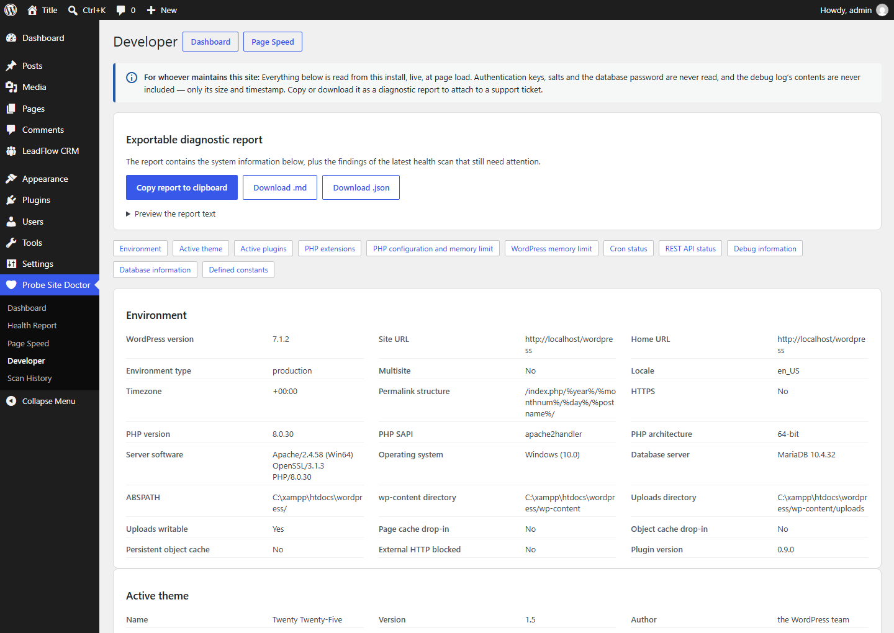
Environment, theme, active plugins, must-use plugins and drop-ins, PHP extensions and limits, cron, REST, debug log, database configuration.
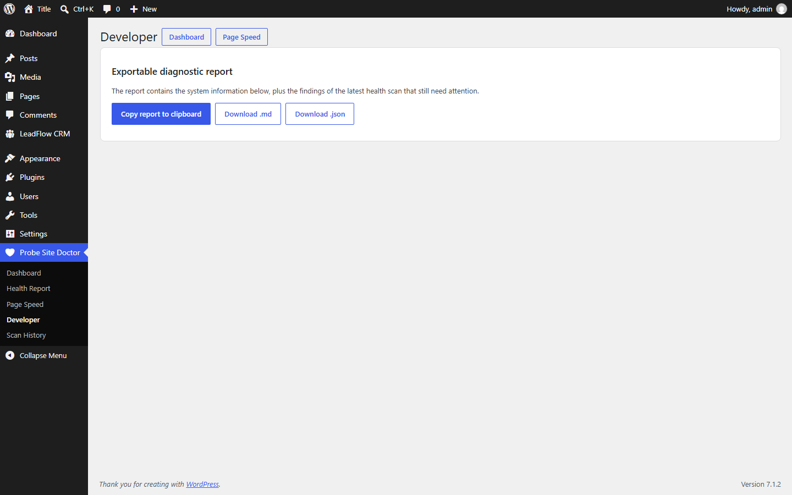
Copy to clipboard, or download Markdown or JSON. Keys, salts, the database password and log contents are never included.
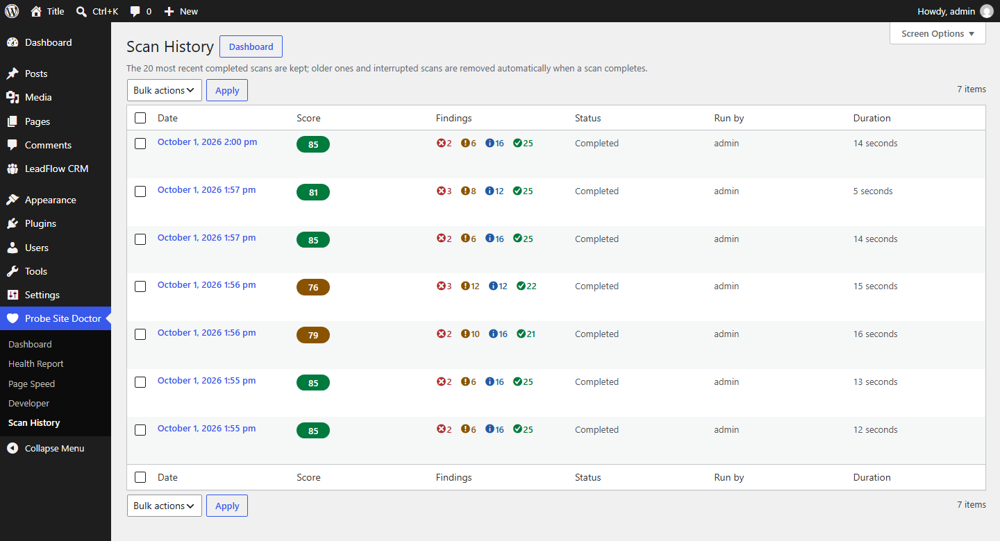
Open, print, download or delete any stored scan. The newest 20 are kept by default.
A scan never changes your site. Nothing is sent to a third party. Where Site Doctor cannot know something, it says so instead of guessing.
Keyboard: space play/pause, ← / → to move. Screenshots are from a real install; the Core Web Vitals figures are demonstration data. Back to the README